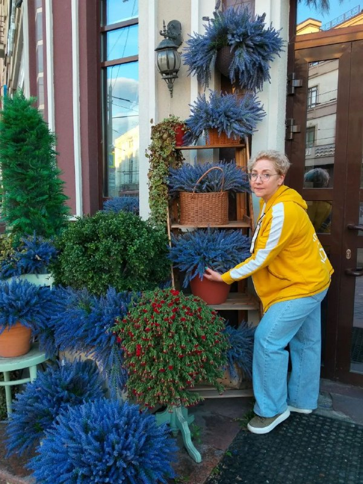

27 перекусов + 10 вариантов за 30 секунд
Книга ленивых перекусов
Когда кушать хочется сейчас, а времени в обрез
из магазина у домаграммовкидля всей семьис собой

Людмила Овчинникова
нутрициолог · стройнеем без подвигов
Начнём
Девочки, привет 🤍
Эта книга для дней, когда некогда. Или лень. Или и то и другое)
Когда до ужина далеко, а в холодильнике «ничего нет». Когда бежишь из дома. Когда хочется вкусного к чаю, а печь пирог - точно нет
- всё из обычного магазина у дома
- готовится от 30 секунд до 7 минут
- у каждого рецепта граммовки и пометка, чем готовить
- заготовки на 3 дня: руками 5 минут, остальное делает духовка
Я сама не люблю стоять у плиты. Так что всё по-честному)
Как пользоваться
Открой по ситуации
Пометки в рецептах⏱ сколько времени займёт, а рядом чем готовить: без техники, микроволновка, сковорода, блендер или духовка
Нет ни минуты
10 вариантов за 30 секунд
Открыла, положила на тарелку, съела. Сохрани эту страницу скриншотом и держи под рукой
- Йогурт без сахара и горсть ягод
- Стакан кефира или ряженки с корицей
- Шарики моцареллы и черри
- Варёное яйцо из запаса и огурец
- Горсть орехов (20 г) и 2 кураги
- Банан и 1 ч. л. арахисовой пасты
- Груша или хурма и ложка творога
- Морковные палочки и 2 ложки хумуса
- Тортилья с сыром: сложить и 30 секунд в микроволновку
- 2 дольки горького шоколада к чаю
Микроволновка
Горячее за 3 минуты
Кружка, вилка и микроволновка. Ни сковородки, ни формы, ни духовки
Микроволновка · № 1
Шоколадный кекс в кружке
⏱ 4 минутымикроволновка
Что нужно- яйцо1 шт
- банан½ шт (60 г)
- овсяные хлопья20 г (2 ст. л.)
- какао1 ч. л.
- разрыхлительна кончике ножа
- Банан разомни вилкой прямо в кружке
- Добавь яйцо, хлопья, какао и разрыхлитель, перемешай
- Микроволновка на 1,5-2 минуты. Сверху пара кружочков банана
Почему спасаетТёплая выпечка к чаю, а мыть одну кружку и вилку
Микроволновка · № 2
Творожная запеканка в кружке
⏱ 4 минутымикроволновка
Что нужно- творог 5%120 г
- яйцо1 шт
- манка или овсяные хлопья10 г (1 ст. л.)
- ягоды30 г
- корица или ванильщепотка
- Разомни творог вилкой с яйцом прямо в кружке
- Добавь манку и корицу, сверху ягоды
- Микроволновка 2,5-3 минуты. Дай постоять минуту, она «доходит»
Почему спасаетВкус запеканки из детства без духовки и формы
Микроволновка · № 3
Омлет с моцареллой в кружке
⏱ 3 минутымикроволновка
Что нужно- яйца2 шт
- молоко30 мл (2 ст. л.)
- моцарелла40 г
- зелень, сольпо вкусу
- Взбей яйца с молоком и солью прямо в кружке
- Добавь моцареллу кусочками и зелень
- Микроволновка 1 минута, перемешай и ещё 40-60 секунд
Почему спасаетГорячий сытный перекус, а сковородку мыть не надо
Микроволновка · № 4
Сырные чипсы
⏱ 3 минутымикроволновка
Что нужно- твёрдый сыр40 г
- паприка или сушёные травыщепотка
- Натри сыр и разложи кучками по чайной ложке на бумагу для выпечки
- Посыпь паприкой. Микроволновка 1-1,5 минуты
- Дай остыть минуту, тогда захрустят
Почему спасаетХрустят как чипсы из пачки, а в составе один сыр
Штучки из лаваша
Лист лаваша и 5 минут
Лаваш выручает лучше любого теста: завернула, подрумянила, готово. Покупай сразу 2 упаковки, он долго лежит
Штучки из лаваша · № 5
Ленивые хачапури
⏱ 7 минутсковорода
Что нужно- тонкий лаваш1 лист (около 70 г)
- сулугуни или моцарелла60 г
- яйцо1 шт
- зеленьпо вкусу
- Натри сыр и смешай с яйцом и зеленью
- Выложи на половину лаваша и заверни конвертом
- Сухая сковорода под крышкой, по 2-3 минуты с каждой стороны
Почему спасаетПахнет как из пекарни, а это 7 минут и одна сковородка
Штучки из лаваша · № 6
Квесадилья с курицей
⏱ 6 минутсковорода
Что нужно- тортилья или лаваш1 шт
- курица-гриль или отварная60 г
- сыр30 г
- помидор½ шт
- болгарский перец30 г
- На половину тортильи выложи курицу, овощи и тёртый сыр
- Накрой второй половиной
- Сухая сковорода по 2 минуты с каждой стороны. Разрежь на треугольники
Почему спасаетВчерашняя курица превращается в новое блюдо, и никто не скажет «опять курица»
Штучки из лаваша · № 7
Ролл с красной рыбой
⏱ 4 минутыбез техники
Что нужно- тонкий лаваш½ листа
- творожный сыр30 г
- слабосолёная форель40 г
- огурец½ шт
- Смажь лаваш творожным сыром
- Выложи рыбу и огурец тонкой соломкой
- Сверни плотным рулетом и нарежь кружочками
Почему спасаетПохоже на роллы из доставки, только без ожидания курьера
Штучки из лаваша · № 8
Конвертики с творогом и зеленью
⏱ 7 минутсковорода
Что нужно- тонкий лаваш1 лист
- творог 5%100 г
- укроппучок
- чеснок1 зубчик
- сольщепотка
- Смешай творог с укропом, чесноком и солью
- Нарежь лаваш широкими полосами, на край положи ложку начинки и сверни треугольником
- Подрумянь на сухой сковороде по 2 минуты с каждой стороны
Почему спасаетГорячие пирожки без теста. Можно сразу на всю семью
Штучки из лаваша · № 9
Пицца на лаваше
⏱ 6 минутсковорода
Что нужно- тонкий лаваш1 лист, сложить вдвое
- томатная паста1 ст. л.
- моцарелла40 г
- курица или ветчина30 г
- черри4 шт
- базиликпара листиков
- Сложи лаваш вдвое и положи на сковороду
- Смажь томатной пастой, разложи курицу, черри и сыр
- Под крышкой на маленьком огне 4-5 минут, пока сыр не расплавится
Почему спасаетКогда семья просит пиццу, а ждать доставку час
Штучки из лаваша · № 10
Ролл с крабовыми палочками
⏱ 5 минутбез техники
Что нужно- тонкий лаваш½ листа
- крабовые палочки50 г
- варёное яйцо1 шт
- огурец½ шт
- йогурт или сметана1 ст. л.
- Мелко порежь палочки, яйцо и огурец, смешай с йогуртом
- Распредели по лавашу и сверни
- Разрежь наискосок пополам
Почему спасаетТот самый крабовый салат, только его можно есть руками
На хлебцах
Намазала и съела
Хлебцы - основа для десятка перекусов. Держи пачку дома, и «нечего есть» больше не бывает
На хлебцах · № 11
Хлебцы с авокадо и яйцом
⏱ 3 минутыбез техники
Что нужно- хлебцы ржаные2 шт (20 г)
- авокадо½ шт (50 г)
- варёное яйцо1 шт
- соль, перецпо вкусу
- Разомни авокадо вилкой с солью
- Намажь на хлебцы
- Сверху половинки яйца и чёрный перец
Почему спасаетВыглядит как завтрак в кафе, а готово быстрее, чем закипит чайник
На хлебцах · № 12
Хлебцы с форелью
⏱ 2 минутыбез техники
Что нужно- хлебцы ржаные2 шт
- творожный сыр30 г
- слабосолёная форель40 г
- огурецнесколько кружочков
- укропветочка
- Намажь хлебцы творожным сыром
- Сверху рыбу и огурец
- Укрась укропом
Почему спасаетПраздничная закуска, которую не стыдно поставить гостям
На хлебцах · № 13
Хлебцы с тунцом
⏱ 3 минутыбез техники
Что нужно- тунец в собственном соку60 г (½ банки)
- йогурт1 ст. л.
- огурец30 г
- зелёный лукпара перьев
- хлебцы ржаные2 шт
- Разомни тунец вилкой с йогуртом
- Добавь мелко нарезанный огурец и лук
- Намажь на хлебцы
Почему спасаетВторую половину банки убери в холодильник, и завтрашний перекус уже готов
На хлебцах · № 14
Брускетта на хлебцах
⏱ 3 минутыбез техники
Что нужно- хлебцы ржаные2 шт
- черри5-6 шт
- моцарелла30 г
- базиликпара листиков
- оливковое маслокапля
- Нарежь черри и моцареллу кубиками
- Выложи на хлебцы
- Сверху базилик и капля масла
Почему спасаетЛетний вкус круглый год из того, что уже лежит в холодильнике
На хлебцах · № 15
Хлебец с арахисовой пастой и бананом
⏱ 2 минутыбез техники
Что нужно- хлебец1-2 шт
- арахисовая паста без сахара10 г (1 ч. л.)
- банан½ шт
- корицащепотка
- Тонко намажь пасту
- Сверху кружочки банана
- Посыпь корицей
Почему спасаетСладко и сытно, когда до ужина ещё далеко
Сладкое без духовки
К чаю, когда хочется вкусненького
Ни теста, ни духовки, ни часа у плиты. Сладкое, которое делается быстрее, чем доходишь до магазина за печеньем
Сладкое без духовки · № 16
Панкейки из банана и яйца
⏱ 7 минутсковорода
Что нужно- банан1 шт
- яйца2 шт
- овсяные хлопья1 ст. л., по желанию
- ягодыдля подачи
- Разомни банан вилкой и взбей с яйцами
- Выкладывай ложкой на сковороду с каплей масла
- По 1 минуте с каждой стороны. Сверху ягоды
Почему спасаетБез муки и сахара: сладость даёт сам банан
Сладкое без духовки · № 17
Конфеты из фиников
⏱ 10 минут на неделюблендер
Что нужно- финики без косточек100 г
- грецкие орехи50 г
- какао1 ст. л. + для обсыпки
- Измельчи финики и орехи блендером до липкой массы
- Скатай шарики размером с грецкий орех
- Обваляй в какао и убери в холодильник. Хранятся до недели
Почему спасаетОдин раз 10 минут, и конфеты к чаю на всю неделю
Сладкое без духовки · № 18
Бананы в шоколаде
⏱ 5 минут + морозилкамикроволновка
Что нужно- бананы2 шт
- горький шоколад 70%40 г
- орехи10 г
- деревянные палочки4 шт
- Разрежь бананы пополам и наколи на палочки
- Растопи шоколад в микроволновке по 20 секунд, помешивая
- Обмакни бананы, посыпь орехами и убери на бумаге в морозилку на час
Почему спасаетКак эскимо, только своё. Делаешь заранее, и вечером не надо идти в магазин
Сладкое без духовки · № 19
Ягодное мороженое за 2 минуты
⏱ 2 минутыблендер
Что нужно- замороженные ягоды150 г
- греческий йогурт100 г
- мёд1 ч. л., по желанию
- Ягоды прямо из морозилки и йогурт - в блендер
- Взбей до густого крема
- Ешь сразу, пока холодное
Почему спасаетМороженое в любой момент, если в морозилке есть пакет ягод
Сладкое без духовки · № 20
Шоколадный творожный мусс
⏱ 2 минутыблендер или вилка
Что нужно- мягкий творог150 г
- какао1 ч. л.
- мёд1 ч. л.
- ягодыдля подачи
- Сложи творог, какао и мёд в пиалу
- Взбей блендером или тщательно разотри вилкой
- Сверху пара ягод
Почему спасаетНа вкус шоколадный десерт, а на деле обычный творог
Заготовила раз
Ешь три дня
Руками 5 минут в воскресенье, остальное сделает духовка или холодильник. А всю неделю перекус уже готов
Заготовила раз · № 21
Омлетные маффины
⏱ руками 5 минут, духовка 20духовка
Что нужно- яйца6 шт
- молоко50 мл
- начинка на выбор150 г: курица и сыр, шпинат и фета, брокколи и сыр
- сольщепотка
- Взбей яйца с молоком и солью
- Разложи начинку по формочкам для кексов и залей яйцом на ¾
- Духовка 20 минут при 180°. Хранить в холодильнике до 3 дней, греть 30 секунд
Почему спасаетШесть горячих перекусов за один заход. Утром взяла два, и ты сыта
Заготовила раз · № 22
Ночная овсянка в банке
⏱ 3 минуты вечеромбез техники
Что нужно- овсяные хлопья40 г
- кефир или йогурт150 мл
- ягоды50 г
- корицащепотка
- Сложи всё в банку и перемешай
- Закрой и убери в холодильник на ночь
- Можно сделать сразу 3 банки на три дня
Почему спасаетВечером 3 минуты, а утром перекус уже ждёт в холодильнике
Заготовила раз · № 23
Хрустящий нут
⏱ руками 3 минуты, духовка 25духовка
Что нужно- нут консервированный1 банка (240 г без жидкости)
- масло1 ч. л.
- паприка, сольпо вкусу
- Слей воду и обсуши нут полотенцем
- Перемешай с маслом и специями прямо на противне
- Духовка 25-30 минут при 200°. Хранить в банке 3-4 дня
Почему спасаетХрустишь вечером перед сериалом вместо сухариков
Заготовила раз · № 24
Фаршированные яйца
⏱ 7 минутбез техники
Что нужно- варёные яйца4 шт
- творожный сыр40 г
- горчица½ ч. л.
- укроп, паприкадля украшения
- Разрежь яйца пополам и достань желтки
- Разомни желтки с творожным сыром и горчицей
- Наполни белки, сверху укроп и паприка. Хранить 2 дня
Почему спасаетВыглядит празднично, а это просто варёные яйца из запаса
С собой
На работу и в дорогу
Собрала вечером, утром взяла. И не надо покупать булку в ларьке, потому что «больше нечего»
С собой · № 25
Рулетики из индейки
⏱ 3 минутыбез техники
Что нужно- ветчина из индейки3 ломтика (60 г)
- творожный сыр30 г
- огурец½ шт
- Смажь ломтики творожным сыром
- Положи на край палочку огурца и сверни
- Сложи в контейнер плотно, чтобы не раскрылись
Почему спасаетСытный перекус, который не мнётся в сумке
С собой · № 26
Коробочка «сыр-виноград-орехи»
⏱ 3 минутыбез техники
Что нужно- сыр30 г
- виноград80 г
- грецкие орехи15 г
- яблоко½ шт
- Нарежь сыр кубиками, яблоко дольками
- Разложи всё в контейнер с перегородками
- Яблоко сбрызни лимоном, чтобы не потемнело
Почему спасаетСвоя сырная тарелка, и печенье на общей кухне уже не манит
С собой · № 27
Смузи в бутылке
⏱ 3 минутыблендер
Что нужно- кефир200 мл
- банан½ шт
- шпинат или ягоды20-50 г
- Сложи всё в блендер и взбей
- Перелей в бутылку с крышкой
- Перед тем как пить, взболтай. Выпить в течение дня
Почему спасаетПерекус, который можно пить за рулём или в очереди
Ленивое воскресенье
20 минут, и перекусы на неделю
Включи духовку и, пока она греется, по порядку:
- Поставь вариться 5-6 яиц. Это половина книги: хлебцы, роллы, фаршированные яйца
- Залей в формочки омлетные маффины и отправь в духовку на 20 минут
- Порежь 2 банана кружочками и убери в морозилку. Это мороженое и смузи
- Нарежь морковь и огурцы палочками и сложи в контейнер с водой, так они дольше хрустят
- Если есть ещё 10 минут, сделай конфеты из фиников
Всё. Теперь в будни перекус собирается за минуту, потому что самое долгое уже сделано
Ленивая полка
Что держать дома
Отмечай галочками, что уже есть. Всё, что без галочки, - в список покупок. Галочки сохраняются
Важно
Пара честных слов
- Перекус - это не замена обеду. Один-два в день, когда до еды ещё далеко
- Ешь с тарелки, а не над раковиной. Так замечаешь, что поела
- Орехи, финики, сыр и арахисовая паста очень сытные. Бери их столько, сколько в рецепте
Диабет или инсулинорезистентность
Оставляем 3 приёма еды. Перекус присоединяешь к завтраку или обеду, к ужину не добавляем
Книга не заменяет консультацию врача. Если есть болезни ЖКТ, почек, аллергия или ты на лечении, сначала обсуди питание с врачом
Дальше
Понравилось готовить лениво?
Новые ленивые рецепты я выкладываю в канале MAX. Заходи, там уже есть завтраки и перекусы
Новые рецепты в MAX
А если хочешь, чтобы я собрала питание под тебя: под твой график, твои вкусы и твою семью, напиши мне в личку
Написать Людмиле